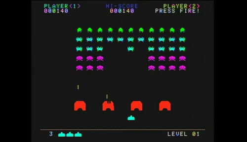

About
Organizada, extrovertida e minimalista, com afinidade por trabalhos artesanais e resolução de problemas.
- 🎓 Formada em Processamento de Dados e Licenciatura em Matemática
- 📍 Cotia/SP
- 🌱 Conservação ambiental como princípio
- 💻 Apaixonada por Cálculo e Java
- 🎮 World of Warcraft
- 🎵 Jack White / Måneskin / MCR
- 🐾 Mãe da Pitty e de peixes
